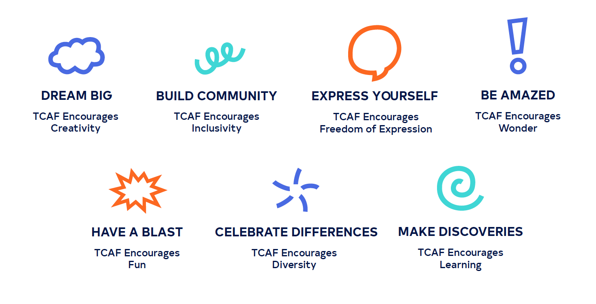

Sep - Dec '20 (12 weeks)
Adobe Illustrator, Adobe InDesign, Adobe Photoshop
The Toronto Comic Arts Festival aspires to bring the literary and artistic merit of comic books and graphic novels to the general public. The Toronto Comic Arts Festival’s brand currently does not have enough consistency tying all of its different assets and sub-events together. While the event posters promote the featured artists and guests well, the event itself lacks a clear voice and image. TCAF required a clearer brand voice and a more cohesive look across all of the brand’s platforms that still allows space for featured artists to express themselves as well. In addition, the brand needs to emphasize the event’s values of diversity and inclusivity to counter the recent negative press. Note: This rebrand is simply a proposal, I am not affiliated with TCAF.
The fluid identity elements are comprised of seven main graphic icons that were created to enhance the TCAF brand with dynamic visuals while still matching the style of the logo. The fluid elements were based on icons that are commonly found in comic books and each one represents one of the brand’s values.
The outlined speech bubble icon may also used to create characters. There are sets of eyes, noses and mouths that can be swapped out to create different faces. A plethora of combinations can be made to represent different types of people, further reinforcing the new tagline: "comics for everyone".

The full brand book can be viewed here.